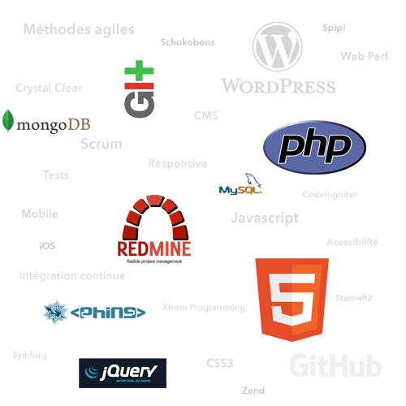
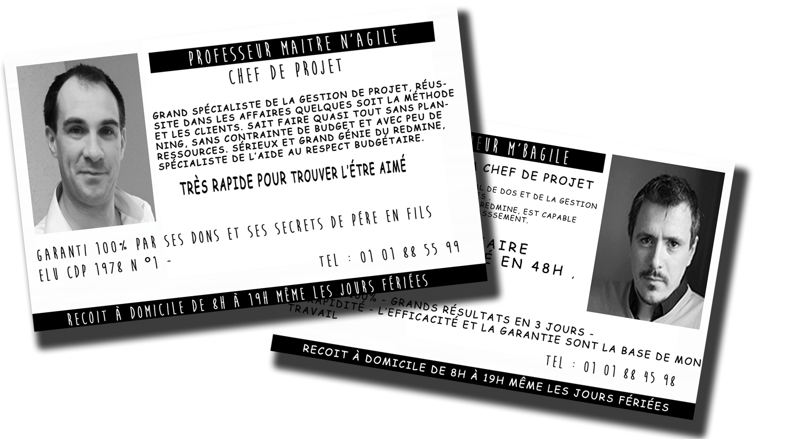
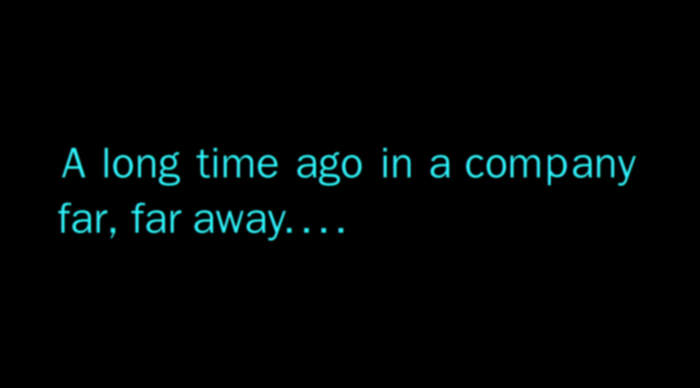

Petite histoire d’une méthodologie agilement établie
Construire simplement sa propre méthode
Proposé par Julien OGER - @JulienOG / Alexandre JAKUBIAK @letitou
Julien OGER - @JulienOG
- Chef de projet psychorigide
- Responsable Méthodologie
- 12 ans de projets Web
A débuggé sous IE 5
Alexandre JAKUBIAK - @letitou
- Chef de projet intrépide
- Responsable Forfait / TMA
- Dans le Web depuis 2001
Firefox n'existait pas
TEAM - #souplineux

Les méthodes agiles (ou pas)...
... UN SUJET TROP LARGE Pour 45 minutes
On vous prévient tout de suite...
On va pas vous vendre du rève ! 

Les méthodes classiques
ça part d'un bon sentiment
[IMG - cycle en V sur fond noir]
Les risques du métier!
[IMG - Effet tunnel]
Quid de l'utilité de ces méthodes ?
[IMG - BG - Usine à gaz - les temps moderne Chaplin]
Nous ne faisons que du web
[IMG - BG - Mail de la NASA]
...Et puis vînt l'agilité!
[IMG - Triangle magique]
Communication
[IMG - PONEY - Communication - format hello banque "Kevin dit..."]
Intégration du client à l'équipe
[IMG - Co-Creation - ]
Favoriser la production
[IMG - Paperrasse à foison]
Livraison fréquentes
[IMG - attention à ne pas non plus trop livrer]
Pourquoi réinventer la roue !
[IMG - velib avec roue du Néolythique]
[Discours - sur les méthodes agiles existantes]
Des limites aux modèles existant ?
[IMG - En relation avec le business]
[Discours - Oui et non : Non car les cadres sont très largement applicable tels que et appliqués à bon escient par beaucoup. OUI car + sur les limites]
Pourquoi ne pas se remettre en cause ?
[Discours - pas une vrai remise en cause, comme on vient de le dire, certains l'applique très bien, maintenant par expérience, nous avons rencontrer les problèmes de communication et de discours relatifs à scrum notamment]
[Discours - Et puis d'abord pourquoi pas ?]
Alors on a créé notre méthode !
[IMG - Légo - Pub des années 80]
[Discours - on s'est un peu creusé la tête et surtout on a commencé par se poser des questions par rapport aux problématiques soulevées : LES même questions que l'on a jugé bon de se poser pour toutes personnes qui veut créer sa propre méthode ATTENTION : seule question qu'il ne faut pas se poser : EST CE QU'ON PART DANS LE MUR? - on envisage l'échec avant d'avoir commencé ]
Question 1 :
Quels sont les objectifs ?
[IMG - qui veut gagner des millions]
[Discours - Vers quoi je veux arriver immédiatement, vers quoi je veux tendre lorsque tout sera finaliser]
Question 2 :
De quoi on part ?
[IMG - Questions pour un champion]
[Discours - C'est bien tout ça mais quel moyen j'ai à ma disposition pour y arriver ?]
Question 3 :
Comment je mets tout ça en oeuvre ?
[IMG - Kamulox]
[Discours - J'ai des objectifs, j'ai des outils après réflexion mais comment je mets mes outils aux services de mes objectifs ? Et surtout comment je réponds à la problématique principale : comment rendre cohérent une méthode qui allie problématique générique et spécificités client / projet / équipe, etc.]
D'abord se pencher sur les objectifs
Les objectifs client...
[IMG - Jean Claude convenant]
...VS matrise d'oeuvre !
[IMG - Bisounours avec fleche dynamique : ca c'est fait!]
Un fil rouge : LE PLANNING !
[IMG - Schéma avec les différentes phases projet dont la phase de merde] [Discours - Pilotage par les délais mais on est prêt à en discuter. Il faut un fil rouge et pour nous c'est le temps car logique + exemple derrière cela avec le client qui indique que son projet est repoussé et qu'il est plus cool : ERREUR FATALE]
Idée générale
Etre agile avec les méthodes agiles
[IMG - Mise en abyme]
Erreurs à éviter
- Prendre en compte l'Avant-Vente
- Ne pas prendre en compte les outils dans la méthode
[IMG - Jean Claude convenant - encore lui]
Les moyens à disposition
[IMG - MATRIX ARMURERIE]
- Concepts
- Actions
- Outils
Des Concepts
Des Actions
Des Outils
[IMG - shoot d'écran paint schéma + reporting postit + tete de dinesh Dinesh]
Des Outils
[IMG - Schéma Réel]
Mise en oeuvre
[Discours - ATTENTION ON RESTE DANS LES METHODES AGILES + RAPPEL DES PRECEPTS DE BASE]
2 approches
- "From Scratch"
- Altérer l'existant
Connais-toi toi même !
[IMG - Jean-CLaude Van dame]
- Qui suis-je ?
- Quel est mon métier ?
- Quels sont mes offres ?
- Quel est mon objectif ?
Que puis-je ? Que sais-je ?
[IMG - YODA]
- Tes connaissances et méconnaissances conscience tu auras !
- Ce que tu as la possibilité de faire en vue tu gardera.
Créer l'ADN de sa méthode
[Discours - faire petit à petit]
- Utile dans tous les cas
- Soyez modeste !
Penser aux ajustements
- En fonction de ses métiers (prédictif) / de ses offres
- En fonction des clients courants (non prédictif)
Un suivi indispensable
[IMG - Remise en cause permanente]
- En cours de projet
- En fin de projet
- Idée : Amélioration continue
- Rester critique
Conduite du changement
[Discours - Qui dit amélioration continue dit changement dit conduite du changement. Sur ce point la communication SUR LA METHODE est indispensable Concerne également le client]
Retour d'expérience
Une utopie ?
Oui
Le risque existe
Mais il demeure limité avec une constante : L'EXPERIENCE
Rester positif
- Garder confiance
- Accepter les petits échecs On peut faire des erreurs mais jamais 2 fois la même ! [IMG - Emile]
- On apprend rien sans se faire mal